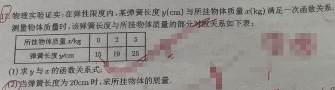

📷 点击查看原图
物理实验证实：在弹性限度内，某弹簧长度 与所挂物体质量 满足一次函数关系。测量数据如下：
| 所挂物体质量 /kg | 0 | 2 | 5 |
|---|---|---|---|
| 弹簧长度 /cm | 15 | 19 | 25 |
（1）求 与 的函数关系式；
（2）当弹簧长度为 时，求所挂物体的质量。
| 知识点 | 说明 |
|---|---|
| 一次函数 | 形如 （）的函数 |
| 待定系数法 | 把已知条件代入函数式，得到方程组求未知系数 |
| 代入求值 | 已知 求 时，把 代入解一元一次方程 |
| 验证习惯 | 求出 后，用未用过的数据验证 |
由题意， 与 是一次函数关系，设
把 代入：
把 代入：
所以函数关系式为 。
验证：当 时， ✓ 与表格数据吻合。
把 代入 ：
📌 来源：江西中考「一次函数」真题（2018江西 蜜柚利润函数、弹簧长度一次函数，见 m.51jiaoxi.com/doc-14244471.html、www.1010jiajiao.com/czsx/shiti_id_5190c341d1ed5f4919d5ec70f0132b97）
题1：某汽车油箱剩余油量 （L）与行驶时间 （h）满足一次函数。已知 时 ， 时 ， 时 。(1)求 与 的关系式；(2)当油箱剩 L 时，已行驶多少小时？
💡 答：；（已行驶 小时）。📄 查看详细解答 →
题2：已知一次函数 的图象经过 、 两点。(1)求解析式；(2)当 时，求 的值。
💡 答：解得 ，故 ； 时 。📄 查看详细解答 →
题3：出租车起步价 元（含 km），之后每千米 元。设费用 （元）与超出 km 的路程 （km）满足一次函数。(1)求 与 的关系式；(2)乘车 km 需付多少元？
💡 答：；乘车 km 即超出 km，（元）。📄 查看详细解答 →
📌 来源：与 p17"一次函数·待定系数法"同主题的进阶练习